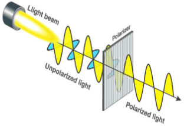
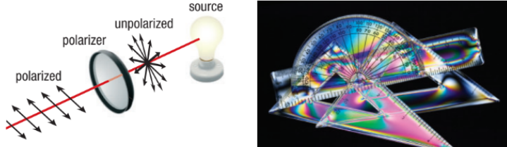
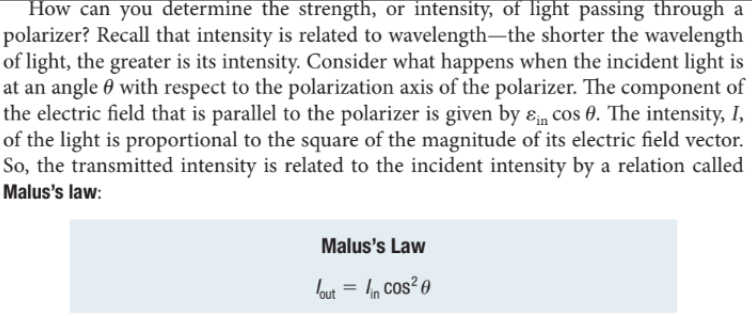
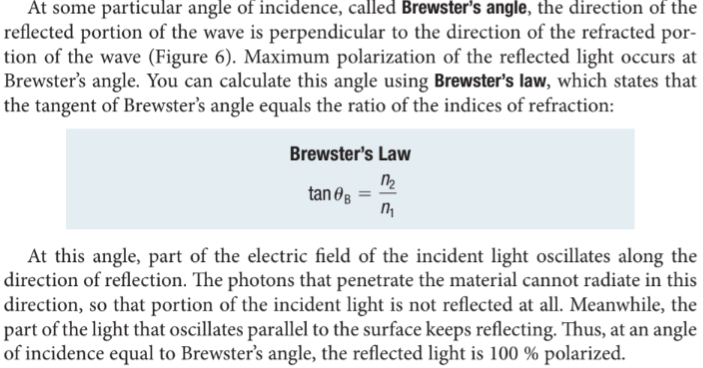
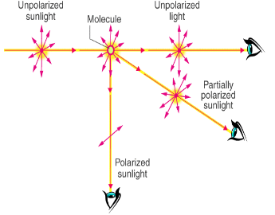

Polarization of Light
Callout
Natural sunlight and almost every other form of artificial illumination transmits light waves whose electric field vectors vibrate in all perpendicular planes with respect to the direction of propagation. When the electric field vectors are restricted to a single plane by filtration, then the light is said to be polarized with respect to the direction of propagation and all waves vibrate in the same plane.

The light waves in polarized light vibrate in a single plane. A mixture of light with different waves and different directions of propagation is unpolarized light. In other words, a source of light creates oscillating electric and magnetic fields, perpendicular to each other, that move away from the source.
The plastic instruments in produce a colorful display when viewed through polarized sunglasses. This effect has practical uses in analyzing stresses to identify where structural failure might occur.

Generating Waves with Specific Polarizations
Radio stations can generate waves with specific polarizations by using various antenna configurations. Light that is entirely polarized in one direction that is perpendicular to the direction of propagation is said to be linearly polarized, or plane polarized.
The degree of polarization depends on the relative orientation of the viewer, the source of the light, and the direction of the sky being viewed.
The colors in the image on the right are much more vivid because the photo was taken through a polarized filter.
Polarization by Selective Absorption
The light that leaves the polarizer is always linearly polarized along the direction of the axis of the polarizer.

The polarizer allows light to pass through and become linearly polarized.
One example of a polarizer, called Polaroid, consists of a type of film used in instant cameras to generate developed film images. Polaroid film is a plastic sheet. It absorbs light when the electric field is perpendicular to the transmission axis and transmits light when the electric field is parallel to the axis of the polarizer.


Polarization by Reflection
If light strikes an interface so that there is a 90 angle between the reflected and refracted rays, the reflected light will be linearly polarized. The direction of polarization (the way the electric field vectors point)is parallel to the plane of the interface


Polarization by Scattering
The scattering of light off air molecules produces linearly polarized light in the plane perpendicular to the incident light. If the charges in a molecule are oscillating along the y-axis, it will not radiate along the y-axis.

Practice
Explain in your own words how materials are able to reflect polarized light when the light source is unpolarized.